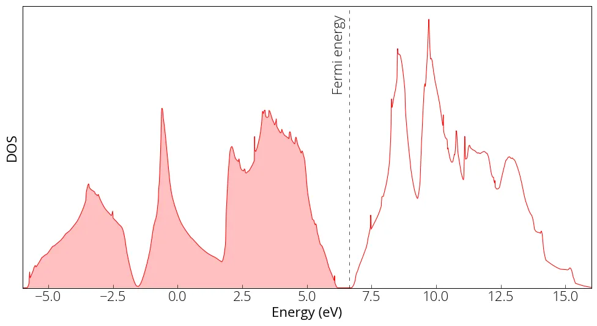

Cálculo de DOS
A densidade de estados eletrônicos é uma propriedade importante de um material.
\(\rho(E)dE\) = número de estados eletrônicos no intervalo de energia \((E, E + dE)\)
Antes de rodar o cálculo da densidade de estados (DOS), precisamos
-
Fazer um cálculo autoconsistente (scf) com íons fixos. Em cálculos DFT com ondas planas, a densidade eletrônica é expressa por funções da forma \(\exp (i \textbf{k} \cdot \textbf{r})\), com energia dada por \(E = \hbar^2k^2/2m\).
-
Fazer um cálculo não autoconsistente (nscf) com uma malha de pontos k mais densa. A DOS exige um grande número de pontos \(k\), pois sua precisão depende da integração no espaço \(k\).
-
Por fim, a DOS é obtida integrando a densidade eletrônica no espaço \(k\).
Criei um novo arquivo de entrada (pw.scf.silicon_dos.in), praticamente igual ao input scf anterior, com alguns parâmetros modificados. Todos os arquivos de entrada estão no meu repositório no GitHub. Usamos a constante de rede obtida no cálculo de relaxação. Não devemos usar diretamente a constante de rede experimental/real: dependendo do método e do pseudopotencial, isso pode gerar tensão no sistema. Aumentamos o ecutwfc para ter mais precisão. Rodamos o cálculo scf:
pw.x < pw.scf.silicon_dos.in > pw.scf.silicon_dos.outEm seguida, preparamos o arquivo de entrada do cálculo nscf. Nele adicionamos occupations no card &system como tetrahedra (adequado para cálculo de DOS). Aumentamos o número de pontos k para 12 × 12 × 12, com a opção automatic. Também especificamos nosym = .TRUE. para evitar a geração de pontos k adicionais em casos de baixa simetria. outdir e prefix devem ser os mesmos da etapa scf, pois algumas entradas e saídas são lidas da etapa anterior. Aqui podemos definir um nbnd maior para calcular bandas desocupadas. O número de bandas ocupadas aparece na saída do scf como number of Kohn-Sham states.
pw.x < pw.nscf.silicon_dos.in > pw.nscf.silicon_dos.outA última etapa é calcular a densidade de estados. O arquivo de entrada da DOS é o seguinte:
&DOS
prefix='silicon',
outdir='./tmp/',
fildos='si_dos.dat',
emin=-9.0,
emax=16.0
/Rodamos:
dos.x < pp.dos.silicon.in > pp.dos.silicon.outOs dados da DOS ficam no arquivo si_dos.dat, definido no input. Podemos fazer o gráfico da DOS:
import matplotlib.pyplot as plt
from matplotlib import rcParamsDefault
import numpy as np
%matplotlib inline
# load data
energy, dos, idos = np.loadtxt('../src/silicon/si_dos.dat', unpack=True)
# make plot
plt.figure(figsize = (12, 6))
plt.plot(energy, dos, linewidth=0.75, color='red')
plt.yticks([])
plt.xlabel('Energy (eV)')
plt.ylabel('DOS')
plt.axvline(x=6.642, linewidth=0.5, color='k', linestyle=(0, (8, 10)))
plt.xlim(-6, 16)
plt.ylim(0, )
plt.fill_between(energy, 0, dos, where=(energy < 6.642), facecolor='red', alpha=0.25)
plt.text(6, 1.7, 'Fermi energy', fontsize= med, rotation=90)
plt.show()
Em um conjunto de cálculos, o prefix precisa ser o mesmo. Por exemplo, os cálculos nscf e bands usam a função de onda calculada pelo scf. Ao fazer cálculos diferentes (por exemplo, quando você muda um parâmetro e quer ver o efeito), use uma pasta de saída diferente ou um prefix único para cada cálculo, para que as saídas não se misturem.
Às vezes é importante amostrar o ponto \(\Gamma\) no cálculo de DOS (por exemplo, quando as bandas de condução cruzam a superfície de Fermi apenas em \(\Gamma\)). Nesses casos, use uma malha de pontos k ímpar (por exemplo, 9✕9✕5).
Conteúdo adaptado de Density of States calculation, do Quantum Espresso Tutorial de Pranab Das, sob licença CC BY 4.0. Alterações: texto traduzido para o português; layout e navegação adaptados.